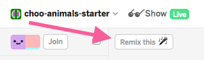
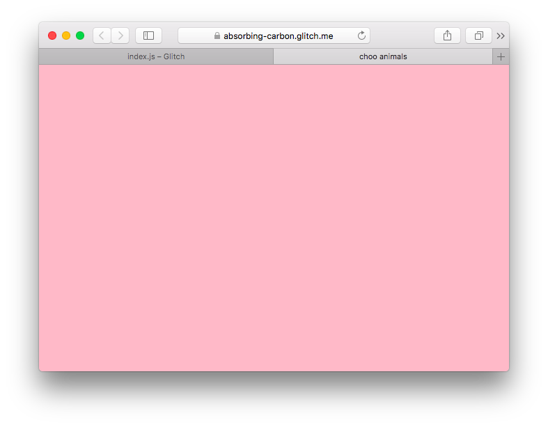
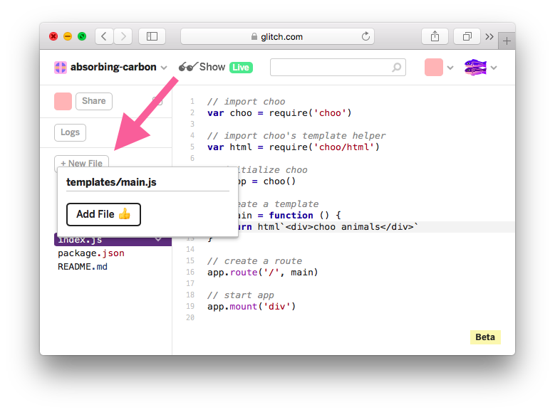
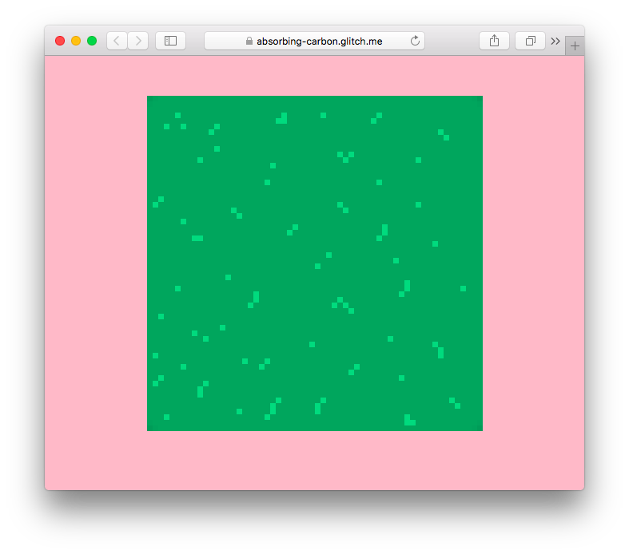
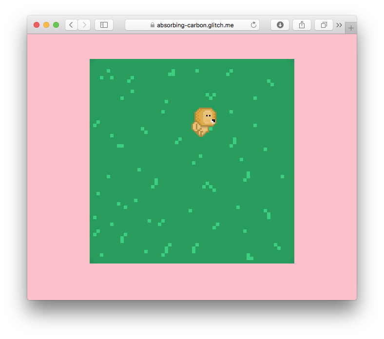
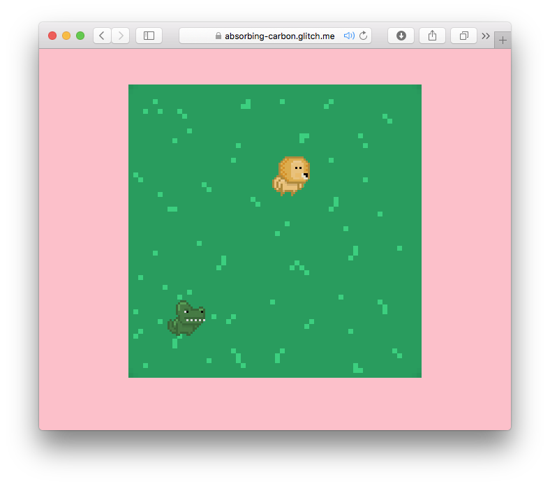
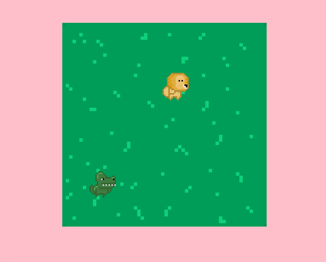
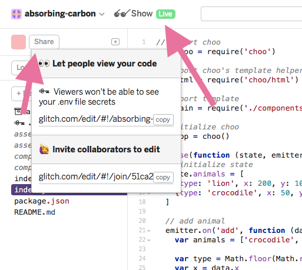
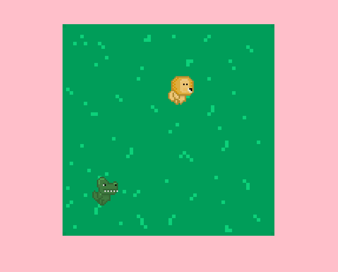
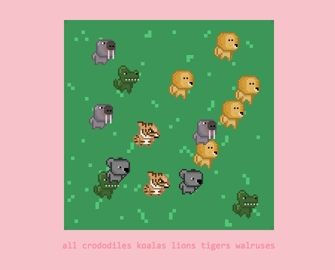

Who is guide this for?
If you're comfortable with the basics of JavaScript, HTML & CSS, but you've never built an interactive web app before, this guide is for you.
If you are a seasoned JavaScript developer with experience in other frameworks, and are looking to try choo for the first time, this guide is also for you.
What is choo?
choo is a small framework that helps you build web apps with JavaScript.
JavaScript makes it easy to add fun interactive elements to our HTML pages. As the language has gained in popularity, developers are now choosing to build their websites entirely with JavaScript. This offers many benefits to both users and developers, most notably that websites can now behave similarly to native desktop or mobile applications.
choo provides a small but powerful collection of tools that commonly feature in JavaScript web apps, such as templating, routing, and state management. By the end of this guide, you will understand what these terms mean. Don't be concerned if you don't already know what they are. This is why you are here!
What will we build?
For this guide, we're going to build an interactive animal simulator called choo-animals. It will be informative, cute, but most of all, fun!
This is what it looks like:
The user can click anywhere on the grass to add an animal to the screen. Clicking on an animal will remove it from the screen. The user can also filter which animals they see, using the filter links at the bottom of the page.
You can try it for yourself here: https://choo-animals.glitch.me
Let's get started!
For this guide, we will be using an online code editor called Glitch.
Glitch lets us write, edit and deploy JavaScript code in the browser. This is useful because we can make changes to our code and see the updated results instantly.
A starter project is available for you to follow along with this guide: https://glitch.com/edit/#!/project/choo-animals-starter
When the editor has finished loading, you should make your own copy of the project so you can start coding. To do this, click the "Remix this" button near the top left hand corner of the window:

Your screen should now looking something like the following:

Starting choo
In our project's left sidebar, click on the index.js file to open its code in the code editor.
You will see the following:
// import choo
var choo = require('choo')
// initialize choo
var app = choo()
// start app
app.mount('div')
At the top of this file, we are importing the choo framework into our project using the require() function.
require() lets us import other JavaScript files into our code. require() does a lot more than this, but if you're not already familiar with its concepts, for this tutorial all you need to remember is that we will use it to import choo, and a handful of other files we write ourselves into our application.
We then need to create an instance of choo that we will build our app with. We initialize this instance using choo(), and then store it in the app variable. From this point onwards, when we interact with choo, it will be via app.
Finally, we start our application by appending it to the <div> element of the HTML page our app will run on. We do this using the app.mount() method that choo conveniently makes available to us. If you open the index.html file, you'll see there is a single <div> element inside <body>. This is where app.mount() attaches our application.
At this point, we can take a look at what our app currently looks like. To do this, press the "Show" button near the top left hand corner of the window:

Our application should appear in a new browser tab. However, as you'll see, the screen will be blank:

Our app does not yet contain any templates, nor any routes. This means that if we try to run our application, we will only ever see a blank page.
Let's fix this!
Building a template
In web app development, a template often refers to a piece of code that will help us render some HTML to the screen. Being templates, they will render most of the same information each time, but change slightly depending on the different bits of input they receive.
Templates are essentially functions: given some input, they will render a new output depending on what happens inside that function.
choo provides another module we can import that will help us build HTML templates with "template strings", one of JavaScript's newer syntax features.
Let's update the code in our index.js file to read the following:
// import choo
var choo = require('choo')
// import choo's template helper
var html = require('choo/html')
// initialize choo
var app = choo()
// create a template
var main = function () {
return html`<div>choo animals</div>`
}
// start app
app.mount('div')
Underneath our choo import near the top of the file, we're now also importing choo's html helper. This becomes accessible via the html variable.
Towards the end of the file, we're creating a function, and assigning it to the main variable. Inside this function, we're returning a template that we'll use to render <div>choo animals</div> to our page.
This bit of code might be confusing, so let's disect further.
The html variable references a function that parses template strings containing HTML code (eg. html`<h1>choo</h1>` ). A given template string will be interpreted into a special data structure, that choo then renders as HTML on the page.
Creating a route
When a friend links you to a specific page on a website, that URL acts as a route so the server knows where to direct you.
Many JavaScript web apps use this same concept to figure out which template to show you at a given point within the application.
This means that to see something on our page, we need to create a route that directs us to the template we just made. Let's add some code underneath our template:
// ...
// create a template
var main = function () {
return html`<div>choo animals</div>`
}
// create a route
app.route('/', main)
// start app
app.mount('div')
The app.route() function takes in two arguments, the first being the URL path you want to create (this should be specified as a string), and the second being the template you'd like to show users when they arrive at that path (usually a variable that references the template).
As this is our first route, we will make it the "index" (or "root") of the entire application. We do this by specifying the route as '/'. This route would be the equivalant of visiting something like https://choo.io (the home page). Creating a route with the path /cats would be the equivalant of visiting https://choo.io/cats.
As we change the code in Glitch's editor, our app's window should automatically update itself. If you open it, you should see the following:

If your app hasn't updated yet, you can simply refresh the window yourself.
Now that we can see text on the screen, this means that you successfully got choo working. Congratulations!
We're not finished yet, but let's quickly summarise what we've done so far:
- First, we initialised
choo, and mounted it onto the page. - We then created a template using the
choo/htmltemplate function. - Finally, we created an index route (
/), and pointed it to our newly made template.
Modularising our templates
Just like we can require() third-party modules like choo into our application, we can break our code down into smaller pieces so that the different concerns of our app exist in their own neat little files.
If we were to modularise what we currently have, it would likely be considered "pre-optimisation", since there's not much code there anyway. Attempts to break it out further would likely just increase complexity, but as we're about to add a lot of new markup to our main template in just a moment, let's go ahead and break it out into its own file.
In Glitch's left sidebar, click the "+ New File" button. Specify your new file's path as templates/main.js, then click Add File:

First this creates a new folder named templates, and then adds a file called main.js inside of it. This file should now appear in the sidebar.
Let's add some code to our new main.js file:
// import choo's template helper
var html = require('choo/html')
// export module
module.exports = function () {
// create html template
return html`
<div class="container">
<div class="grass">
<img src="/assets/bg.gif" />
</div>
</div>
`
}
What's happening here?
First, we are importing choo's html helper so that we can build a new template within this file.
Next, we are assigning a function that returns a template to the variable called module.exports. What does this variable do exactly? In the context of this application, when we create JavaScript files that we'd like to import into other JavaScript files, whatever is assigned to module.exports is what will be exported out.
Inside of our template code, we've added some markup that will display an image called bg.gif on the page.
(NOTE: There are some asset files this project requires that you won't be able to see in Glitch's left sidebar. This image is an example of one those files. Other assets will crop up later in this tutorial, but I'll be sure to point them out to you.)
Now let's require() this new template into our index.js file, and see the results.
Start by adding this line towards the top of index.js:
// ...
// import choo's template helper
var html = require('choo/html')
// import template
var main = require('./templates/main.js')
// initialize choo
var app = choo()
// ...
Underneath the line of code where we import choo's html helper, we now import the main.js file we just created. Remembering that we exported a function that returns a template, we can now use that as the designated template for our / route.
Let's clean up index.js:
// import choo
var choo = require('choo')
// import choo's template helper
var html = require('choo/html')
// import template
var main = require('./templates/main.js')
// initialize choo
var app = choo()
// create a route
app.route('/', main)
// start app
app.mount('div')
If we look at our application, we should now see the following:

Awesome! Let's recap what we just did:
- First, we created a file called
main.jsinside of a new folder calledtemplates. - Inside
main.js, we created a function that returns a template, and then exported it usingmodule.exports. - Finally, we imported
main.jsintoindex.js, then plugged it into our/route.
Now that we have a nice grass field to play in, let's start adding some animals.
Adding state to our application
A core behaviour of many modern web applications is that they can be entirely driven and interacted with, without having to refresh or navigate to another static HTML page.
When you browse a website like Wikipedia or Mozilla Developer Network, each new page you navigate to, or each piece of functionality you interact with, will require a new page from the server to load in your browser.
In choo, the idea is that when information is changed or new information becomes available, the page will automatically update itself to reflect that, much in the same way that a native desktop or mobile application would.
To do this, choo uses the concept of "application state" to drive the output of its templates. This could mean absolutely nothing to you right now, so it's a good opportunity to dive further into what "state" is and how it works.
In programming, it's commonplace for a script to have several variables which contain information that you pass into a function. A function will typically do the same thing each time you run it, so when you pass the same variables in as arguments again and again, it will keep returning the same result:
// example
var fun = true
var name = 'Alice'
function sentence() {
if (fun) {
console.log(`Yay! ${name} is having fun!`)
} else {
console.log(`Oh no, ${name} is not having fun.`)
}
}
sentence()
sentence()
sentence()
// the following is logged to screen:
// "Yay! Alice is having fun!"
// "Yay! Alice is having fun!"
// "Yay! Alice is having fun!"
As mentioned earlier in this guide:
"Templates are essentially functions: given some input, they will render a new output depending on what happens inside that function."
In choo, state is passed down into our templates so that we can change what our templates do depending on what is currently contained in that state.
Let's demonstrate this concept by adding new code to our index.js file:
// ...
// initialize choo
var app = choo()
app.use(function (state) {
// initialize state
state.animals = {type: 'lion', x: 200, y: 100}
})
// declare routes
app.route('/', main)
// ...
Underneath our initialization of choo, we are calling app.use() and passing a function into it. The function we pass in receives a state object which represents the state of our entire application. Although it has a wider scope of usage, for now we can just call app.use() when we want to setup the initial parameters of our application's state.
Inside of app.use(), we're creating a new property on the state object called state.animals. We're then assigning it an object that contains parameters we'll use to place a new animal on our screen: type sets which animal we want, and the x and y properties will dictate the animal's position.
Passing state into our templates
Now that we've set a new property on our state object, we can access this state from any templates that our router calls.
Let's flip over to main.js, and update our template function:
// import choo's template helper
var html = require('choo/html')
// export module
module.exports = function (state) {
var type = state.animals.type
var x = state.animals.x
var y = state.animals.y
// create html template
return html`
<div class="container">
<div class="grass">
<img src="/assets/bg.gif" />
<img src="/assets/${type}.gif" style="left: ${x}px; top: ${y}px;" />
</div>
</div>
`
}
A few things have changed, so let's briefly dive in to see what's happening:
First, the function that we're exporting now takes in an argument called state. This is the same state object from index.js, after it has been run through app.use(). This means that the state.animal property is now available to us inside this template.
Inside the function, we're initializing a set of variables that point to the different parts of our state.animals object. Then, inside of our template string, we've created a new <img> element. This <img> will represent an animal we place on screen.
As mentioned earlier, we have several different images located inside an invisible assets folder in Glitch. They are:
assets/bg.gifassets/crocodile.gifassets/koala.gifassets/lion.gifassets/tiger.gifassets/walrus.gif
We can use the state.animals.type property that has been passed into our template to point to the correct image we need to render the animal on screen (src="/assets/${type}.gif").
Then, we can set a style property on the same <img> element to position the animal using left and top. These correspond to our state.animals.x and state.animals.y values.
You've probably noticed the interesting ${} syntax being used inside of our template strings. By placing short JavaScript expressions inside these curly braces, the code will be evaluated and replaced with its returned value. In this case, ${type} will evaluate to 'lion', ${x} will evaluate to 200, and so on.
If we look at our application now, you should see something cute like this:

Nice! A super sweet lion has decided to come and hang out with us while we code.
That was a lot to digest, so let's quickly go over what we just did:
- First, we setup
app.use()in ourindex.jsfile. - Inside of
app.use(), we then initialized our app'sstateobject by describing the type and coordinates of an animal. - Then, we updated our
main.jsfile to reflect the information stored in state.
As a result, an animal is now rendered on the screen.
It would be cool to have more animals roaming around without copying and pasting additional <img> elements into our template. Instead, we should add more animals into our state, then have our template reflect those changes.
Rendering templates with loops
The state.animals property currently refers to a single object, representing one animal. If we want to render multiple animals on the screen, we'd need a way of representing multiple animals inside this property.
Using an array, we can store multiple objects inside of it, each representing an animal that the user should see.
Let's head to index.js and update our initialized state to reflect this change:
// ...
// initialize choo
var app = choo()
app.use(function (state) {
// initialize state
state.animals = [
{type: 'lion', x: 200, y: 100},
{type: 'crocodile', x: 50, y: 300}
]
})
// declare routes
app.route('/', main)
// ...
state.animals now refers to both a Lion and a Crocodile, but main.js also needs to be updated to handle this restructure.
Our template should render each animal regardless of how many there are in state. To do this, we can program our template to iterate across state.animals, rendering a block of HTML for each animal that exists in the array.
First, let's create a new file in Glitch with the filepath templates/animal.js. This template will represent a single animal, and will be used to iterate over state.animals inside of main.js.
Let's wire up animal.js with the following code:
// import choo's template helper
var html = require('choo/html')
// export module
module.exports = function (animal) {
var type = animal.type
var x = animal.x
var y = animal.y
// create html template
return html`
<img src="/assets/${type}.gif" style="left: ${x}px; top: ${y}px;">
`
}
This code you've seen before, as it already exists inside of main.js. We're breaking this template out into its own file so that we can refer to it each time we iterate over state.animals. Let's do that now by updating main.js:
// import choo's template helper
var html = require('choo/html')
// import template
var animal = require('./animal.js')
// export module
module.exports = function (state) {
// create html template
return html`
<div class="container">
<div class="grass">
<img src="/assets/bg.gif" />
${state.animals.map(animal)}
</div>
</div>
`
}
In main.js, we've replaced the HTML markup we shifted into animal.js with ${state.animals.map(animal)}. What is happening here?
In JavaScript, arrays come with a built-in method called map(). When we call map(), we also pass into it another function which is executed against every item in the array. Each time the function runs, the current item is passed in as an argument. When map() is finished running, it will return a new array with each function's return value.
For example:
var array = [1, 2, 3]
var newArray = array.map(function (num) {
return num * 2
})
console.log(newArray)
// [2, 4, 6]
In the context of our application, we are using map() to iterate across each animal in our state.animals array. By passing in our animal.js template into map(), we can then create a new array of templates that each represent an animal. These are then rendered in place of ${state.animals.map(animal)}.
If you look again inside of animal.js, you'll see that an animal is passed in as an argument each time the exported function is run. We are then grabbing the type,x, and y values of the animal currently being iterated on, and returning that new template.
If we now look at our application, we should see that a new friend has arrived!

Now is a good time to quickly summarise what we just did:
- First, we changed our state to reflect not just one animal (a single object), but many animals (an array of objects).
- We then created a new template (
animal.js) which outputs an<img>element, representing one animal. - Finally, using JavaScript's
map()function, we "mapped" acrossstate.animalsinside ourmain.jsfile. This lets us to render each animal inside ofstate.animalsto the screen.
It would be nice if we could add new animals to our application simply by clicking somewhere on the grass, rather than having to update our code by hand to reflect this. Let's figure out a way to update our state directly from our templates.
Updating state
As mentioned several times already, "templates are functions. Their output will change depending on their input".
In the last section of this guide, we began passing our application's state down into our templates. Specifically, their output now depends on what is contained in state.animals.
What would happen if we changed the contents of our state, while the application is still running? Let's find out!
Looking at our index.js file, we initialize our state by passing a function into app.use() that modifies the state object. If we could run another function inside of this same function, but trigger it directly from our template, we can then update our state at any point in time, which should also update what we see on the screen.
Let's update index.js (specifically, our app.use() function):
// ...
app.use(function (state, emitter) {
// initialize state
state.animals = [
{type: 'lion', x: 200, y: 100},
{type: 'crocodile', x: 50, y: 300}
]
// add animal
emitter.on('addAnimal', function () {
var obj = {type: 'lion', x: 100, y: 200}
state.animals.push(obj)
emitter.emit('render')
})
})
// ...
In this code block, we've introduced a new object called emitter, which is available to us inside of the function we pass into app.use().
emitter is what we could refer to as either an "event bus" or a "message bus". It listens for events that occur in other parts of our application, and reacts to them by executing a function.
Underneath our initialization of state.animals, we're calling emitter.on(). This function takes two arguments:
- The name of the "event" to listen for (specified as a string. We chose
addAnimal, but this can be anything we like.) - A function that will run when the event is triggered
Inside the function, we're creating a new lion object, and pushing it into our state.animals array. At this point, our state has now been modified, but we then need to tell choo to re-render our templates to reflect these changes.
To do this, we're calling emitter.emit('render'). This triggers a pre-configured event handler inside of choo, that tells the app to re-render the page.
With this all set up, we now need a way to trigger the add event handler from one of our templates.
Let's update our template inside of main.js to show the following:
// import choo's template helper
var html = require('choo/html')
// import template
var animal = require('./animal.js')
// export module
module.exports = function (state, emit) {
// create html template
return html`
<div class="container">
<div class="grass">
<img src="/assets/bg.gif" onclick=${add} />
${state.animals.map(animal)}
</div>
</div>
`
// add new animal to state
function add () {
emit('addAnimal')
}
}
There are three significant updates to this file:
As well as passing
stateinto our function, we're now also passing inemit.Our
<img>element now has anonclickproperty. This means that when the user clicks the image of the grass, a function calledaddwill be triggered.Below our template, we're declaring the
addfunction referred to in our<img>element'sonclickproperty. Inside, we're triggeringemit('addAnimal'), which will cause ouraddAnimalevent handler, back inindex.js, to execute.
If we switch to our application again, and click on the grass, a new lion should appear:

✨ Awesome! We now have our very first interactive choo app. ✨
We're not quite done yet, but we just implemented a lot of really cool new functionality, so let's dive deeper to understand exactly what's going on.
index.js holds the state of our application, which is handled via the function we pass into app.use(). This function receives two arguments, state & emitter.
// example
app.use(function (state, emitter) (
state.number = 1
emitter.on('changeNumber', function () {
state.number = 2
})
})
The state object contains the data structures that drive our application. The rendered output of our templates change depending on what this data holds.
We then use the emitter object to register functions that react to the execution of events elsewhere in our application. The names of the events we register can be anything we like. As they are registered inside of the function we pass into app.use(), they have the ability to modify the state object directly.
In main.js, we have access to both the state object, and an emit function. These are both passed into any template functions that are registered with a route (eg. app.route('/', main)).
// example
module.exports = function (state, emit) {
return html`
<div onclick=${update}>
${state.number}
</div>
`
function update () {
emit('changeNumber')
}
}
We can use the state object to render useful bits of information inside of our templates. We can also continue passing that information further down into child templates.
We can use the emit() function to trigger updates to our state object, from our templates. If we register emitter.on('cats') inside of app.use(), this can be triggered by emit('cats') somewhere else.
Finally, if we want to trigger an event by clicking on an element in one of our templates, we can register a function on that element using the onclick property (eg. <div onclick=${update}></div>).
Passing data to state
Although our app is now interactive, it's not as fun as it could be.
When we add an animal to our state object, we're adding the same animal (a Lion), and giving it the same coordinates each time. To make this more interesting, when a new animal is created, our app should randomly choose from a set of different animals, and position it with the same coordinates as our cursor.
To do this, we need a way to pass information to our state from our templates. This can be done via the event handlers we are triggering.
Looking at our main.js file, we are executing our declared add() function when we click on the image of the grass. Inside of this function, we're executing emit('addAnimal'), which tells our handler back in index.js to update our state object.
emit() actually accepts two arguments:
The first, which we already know, is the name of the event we'd like to trigger (eg.
'addAnimal').The second is any data we'd like to pass through to the function on the other end.
Let's update our add() function in main.js:
// ...
function add (e) {
var x = e.offsetX - 20
var y = e.offsetY - 10
var obj = {x: x, y: y}
emit('addAnimal', obj)
}
// ...
Now, when add() executes after you click on the grass, two new things are happening:
First, we are grabbing the
offsetXandoffsetYinformation from the click event (notice thate, the click event object, is now passed into this function). This tells us where we clicked our mouse, relative to the image of the grass. We're slightly adjusting these values to compensate for the cursor itself.Then, we are calling
emit(), specifying the name of the event listener we'd like to trigger, but also passing in an object that contains thexandycoordinates of where we clicked.
Let's go back to index.js and make some changes to our emitter.on('addAnimal') handler:
// ...
// add animal
emitter.on('addAnimal', function (data) {
var x = data.x
var y = data.y
var obj = {type: 'lion', x: x, y: y}
state.animals.push(obj)
emitter.emit('render')
})
// ...
The function that we pass into this event listener, now takes in a new argument: data. This value represents the information that we passed into emit() back in main.js (the x and y coordinates).
We can then construct an object with our coordinates, push this to state.animals, then re-render the screen.
We did mention earlier that we'd like to randomly create a new type of animal for each click, so let's update our code again to reflect that:
// ...
// add animal
emitter.on('addAnimal', function (data) {
var animals = ['crocodile', 'koala', 'lion', 'tiger', 'walrus']
var type = Math.floor(Math.random() * 5)
var x = data.x
var y = data.y
var obj = {type: animals[type], x: x, y: y}
state.animals.push(obj)
emitter.emit('render')
})
// ...
Now before pushing a new object to state.animals, we randomly select an index from an array of 5 names, and use this as our animal's type property.
If we switch over to our application again, and begin clicking different areas of the grass, we should see something like this:

LOOK AT HOW CUTE THEY ALL ARE!
Take a moment to appreciate everything you've just built! Our choo app is really starting to shape up.
Let's quickly revisit what we accomplished in this last section:
In our template (
main.js), we obtained thexandycoordinates of our mouse click event.We then passed this information through to the
addAnimalevent handler usingemit('addAnimal', obj).Over in
index.js, we received this data inside ouremitter.on('addAnimal')handler asdata, and proceeded to push this into ourstate.animalsarray.
At this point, we've made a super fun interactive choo app that we can share with all our friends! 👭
ProTip™ ✨ you can send the link of your Glitch app to anyone who'd like to play with your app, or hack on your code with you via Glich's Share or 🕶 Show buttons:

Now that we're on a roll, let's think of a way to build our next feature: removing animals from our app.
Removing data from state
If we can add an animal to our grass field by clicking in a particular spot, we should also be able to click on the animal itself and remove it from the screen.
This means that instead of updating state.animals by adding a new item to its array, we would instead need to remove the item that correlates to the animal that was clicked.
Let's start by opening main.js and update its code:
// import choo's template helper
var html = require('choo/html')
// import template
var animal = require('./animal.js')
// export module
module.exports = function (state, emit) {
// create html template
return html`
<div class="container">
<div class="grass">
<img src="/assets/bg.gif" onclick=${add} />
${state.animals.map(animalMap)}
</div>
</div>
`
// map function
function animalMap (obj, i) {
return animal(remove, obj, i)
}
// add new animal to state
function add (e) {
var x = e.offsetX - 20
var y = e.offsetY - 10
emit('addAnimal', {x: x, y: y})
}
// remove animal from state
function remove (e) {
var index = e.target.id
emit('removeAnimal', index)
}
}
There's a ton of new stuff here, so let's go through it carefully:
First, we created a new function called animalMap(), which returns our animal.js template:
function animalMap (obj, i) {
return animal(remove, obj, i)
}
Then, near the top of this file, we're now passing our new animalMap() function into state.animals.map, rather than the animal.js template itself:
${state.animals.map(animalMap)}
Finally, we created a new remove() function that we'll use to remove animals from our state. Let's come back to that shortly.
You may have noticed that we're using this new animalMap() function we created to pass some new things into our animal.js template, before we run it through map(). Why are we doing this?
To build this feature, our animal.js template needs access to some extra functions and information. The first thing we pass in is our new remove() function. Then, we pass in obj, which represents the animal that map() is iterating across. The final argument, i, represents the index number of the current map() iteration.
These changes may seem confusing and abstract at first. Don't worry! Our next move will hopefully tie these changes together.
Let's open animal.js, and update its code:
var html = require('choo/html')
module.exports = function (onclick, animal, i) {
var type = animal.type
var x = animal.x
var y = animal.y
// create html template
return html`
<img src="/assets/${type}.gif" style="left: ${x}px; top: ${y}px;" id=${i} onclick=${onclick}>
`
}
We've made some subtle but important changes. Let's break these down:
Our
animal.jstemplate now accepts the three arguments we described above: theremove()function passed in frommain.js(represented asonclick()), the currentanimalwe're iterating over, and also that animal's index number (represented asi).We've added an
idproperty to our<img>element, which accepts the value ofi. We use this to identify which animal we are clicking, and where it sits within ourstate.animalsarray.We've also added an
onclickproperty to our<img>element, which will trigger theremove()function we passed in frommain.js.
Let's open index.js, and update app.use():
// ...
app.use(function (state, emitter) {
// initialize state
state.animals = [
{ type: 'lion', x: 200, y: 100 },
{ type: 'crocodile', x: 50, y: 300 }
]
// add animal
emitter.on('addAnimal', function (data) {
var animals = ['crocodile', 'koala', 'lion', 'tiger', 'walrus']
var type = Math.floor(Math.random() * 5)
var x = data.x
var y = data.y
var obj = { type: animals[type], x: x, y: y }
state.animals.push(obj)
emitter.emit('render')
})
// remove animal
emitter.on('removeAnimal', function (i) {
state.animals.splice(i, 1)
emitter.emit('render')
})
})
// ...
Towards the bottom of this function, we've added emitter.on('removeAnimal'). When we run emit('removeAnimal') from main.js, this is the block of code it triggers. It takes the index number of the animal that we clicked (this was stored on the <img>'s id property), and removes it from state.animals using JavaScript's built-in splice() function.
Afterwards, we run emitter.emit('render'), which tells choo to re-render the screen.
Let's check our application, and see if this works:

Cool! We can add animals to our screen, and also remove them. Talk about cuteness overload!
If we added a large number of animals to our plot of grass, it would be useful if we could filter the screen so we only see a specific type of animal.
Let's build this final feature to round out the guide, and finish our choo-animals application!
Creating dynamic routes
Before we create this new filter, let's first specify how we'd like the functionality to work.
At present, our application works entirely from one route ('/'). It would be cool to build a second route that allows us to dynamically specify which animal we'd like to filter for. What does this mean?
Our app can currently choose from five different animals to add to the screen. Rather than creating five different routes, one to filter each animal (eg. app.route('/filter/lion'), app.route('/filter/tiger')), we can create one route that handles any type of animal we ask for.
Below our first and only route in index.js, let's add a second one:
// ...
// declare routes
app.route('/', main)
app.route('/filter/:type', main)
// start app
app.mount('div')
You may have noticed that the route we just declared (/filter/:type) looks slightly funny. What does :type mean?
If we clicked on a link in our application that directed us to /filter/lion, or /filter/tiger, we'd be directed to the route we just declared. The : syntax tells the router that it will accept any value for this section of the route's path. The router will then make that value available to our application so it can respond to the user in a different way.
In this particular context, the last value of this URL's path becomes available to our application via state.params.type. If our route was declared as /filter/:meow, the value would become available to us via state.params.meow.
This means that when our user is directed to a specific /filter route, our application can see what type of animal they're asking for, and filter its output accordingly.
Our new route also points to main.js, so let's add new code to that template's animalMap() function, so it can filter for specific animals:
// ...
// add new animal to state
function add (e) {
var x = e.offsetX - 20
var y = e.offsetY - 10
emit('addAnimal', {x: x, y: y})
}
// map function
function animalMap (obj, i) {
var type = state.params.type
if (type && type !== obj.type) {
return // nothing
} else {
return animal(remove, obj, i)
}
}
// ...
This update to animalMap() checks whether we've navigated to our /filter/:type route. If we have, state.params.type would contain a string of the animal we're looking for. If not, this value would be empty.
If this value contains a string, but does not match the type of animal our map() function is currently iterating over, we exit this function early by returning nothing. This means we don't render anything to the screen during this iteration. In all other circumstances (if there is a match, or we aren't filtering at all), then we render the animal to the screen during that iteration.
To activate our filter, let's add some new template markup to our main.js template, which renders a list of anchor elements, each linking out to a specific animal's filter:
// ...
// create html template
return html`
<div class="container">
<div class="grass">
<img src="/assets/bg.gif" onclick=${add} />
${state.animals.map(animalMap)}
</div>
<div class="controls">
<ul class="filters">
<li><a href="/">all</a></li>
<li><a href="/filter/crocodile">crocodiles</a></li>
<li><a href="/filter/koala">koalas</a></li>
<li><a href="/filter/lion">lions</a></li>
<li><a href="/filter/tiger">tigers</a></li>
<li><a href="/filter/walrus">walruses</a></li>
</ul>
</div>
</div>
`
// ...
Let's switch to our application, and see what happens:

That's so cool! When we click on a filter, our app redirects to a new dynamic route, and our animalMap() function handles which animals need to appear on the screen.
Summary
Woah, we just finished building choo-animals. Congratulations!
I hope you had a lot of fun making this app, just as much as I had fun writing this guide.
Before we wrap up, let's write down a list of all the cool things we learned to do with choo. We learned how to:
- Create templates
- Create static & dynamic routes
- Create & update application state
- Modularise our code
- Render templates with loops
- Pass data around our application
These concepts form a large part of any modern web app, not just those built with choo, but with other libraries and frameworks as well.
In the following chapters of this handbook, you'll dive into other topics such as form handling, third-party library integration, and sending & receiving data from external APIs.